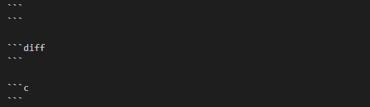

HowtoWriteDoc
介绍如何新建文档，及常用快捷键
说明
文档新建
选择file->open Folder… 选择一个存储文档的目录
空白处右键，选择Create MDPlant Template,输入你的主题，在打开的网页顶端显示
点击打开src，会有默认已经新建的模板（000_Template）,这里可以保留，后续参考
不同阶段我们都会有不同主题进行总结，如果需要新建新的主题，在src进行右键选择Create MDPlant Template,创建新的模板输入主题名字
每个主题可能都会有多篇文档进行总结，所以进入对应主题->docs 下右键选择Create MDPlant Template创建新的文档并输入文字。
excel 表格插入
在对应的位置添加 table + 相对json路径，然后按 ctrl + enter即可显示excel表格，
资源文件插入
右键资源文件，选择相对路径，复制到需要的位置，按ctrl + enter 即可显示资源文件的链接
区域显示用配对的
diff表示显示的git patch；
配对的符号前的空格需要保持一致，符号内的内容才能显示在区域内
右上角有预览窗口，可以在编写文档过程中打开预览窗口，看整体效果 
代码堆栈 *+一个空格，然后按ctrl + enter ，上下级间隔两个空格